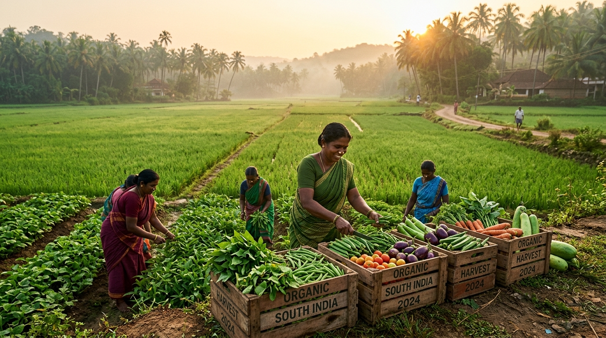
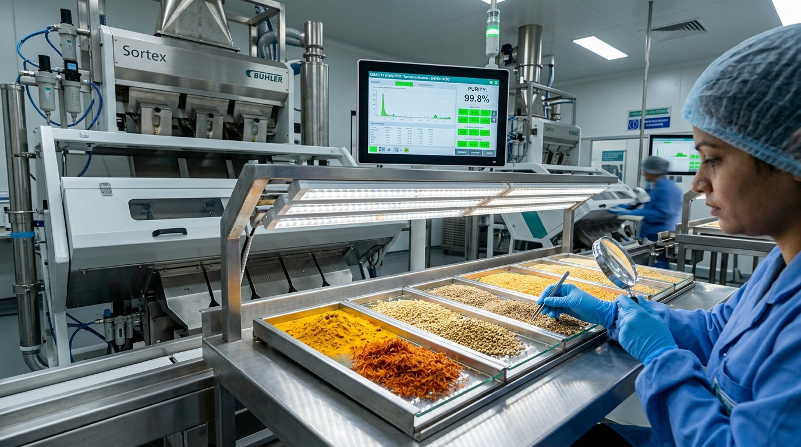

Sourced With 
Purpose.
Moved With Precision.
Connecting verified South Indian origin harvests and precision commodities to sovereign terminals worldwide. Institutional execution, certified cold chains, and dependable multimodal trade corridors.
What Moves With Shipyon.
From farmgate harvests to precision industrial goods, we connect verified regional origins with international trade demand.

Freshness, Rooted in Origin.
Direct farmgate sourcing across Tamil Nadu, Karnataka, and Maharashtra. Handled under stringent phytosanitary protocols with continuous temperature telemetry.

Purity From the Soil.
Unadulterated spices with certified curcumin and essential oil profiles. Cleaned, graded, and packaged for commercial culinary and extraction buyers.

Processed Nutrition.
Hygienically processed and packaged to retain natural flavor, shelf-life, and bio-nutritional integrity across global transit.
Engineered Yarns.
Sourced directly from South India's premier spinning mills. Consistent tensile strength, low contamination, and certified yarn counts.

Precision Castings.
Ductile and grey iron castings engineered for international municipal and industrial infrastructure projects.
Four Moves. One Seamless Journey.
Every shipment is protected by a disciplined logistics framework spanning soil, cold chain, seaport, and final destination discharge.
Source
Origin matters. We identify verified farmers and production hubs with proven agronomy records and ethical labor practices.

Assure
Every harvest passes multi-stage optical Sortex grading, laboratory chemical screening, and international phytosanitary audits.
Prepare
Palletized under pre-cooled atmospheric parameters with specialized maritime dunnage to safeguard perishable viability.
Move
Priority berthing at Chennai, Tuticorin, and Cochin with ocean transport agreements securing guaranteed container transit slots.
Connected by Origin. Driven by Opportunity.
Direct maritime sea lanes and express air corridors linking South India to premier global discharge gateways.
The People Behind Every Move.
Global commerce is powered by trust, sovereign origin relationships, and rigorous operational stewardship.

Pranesh Kumar
“Trade is not merely logistics; it is an unbroken commitment to product integrity from the soil to the shelf. When an origin is respected, the market responds with trust.”

Naveen Ananthan
“Global commerce demands sovereign reliability, rigorous compliance, and absolute transparency at every interchange. We engineer trade so clients never need to second-guess quality.”
Direct Trade Desks
Container Allocation & Volume Estimator
Estimate container equipment, cold-chain temperature thresholds, and port dispatch windows for institutional consignments.
Submit Trade Requirement
Provide specifications below for immediate container allocation and quotation review.